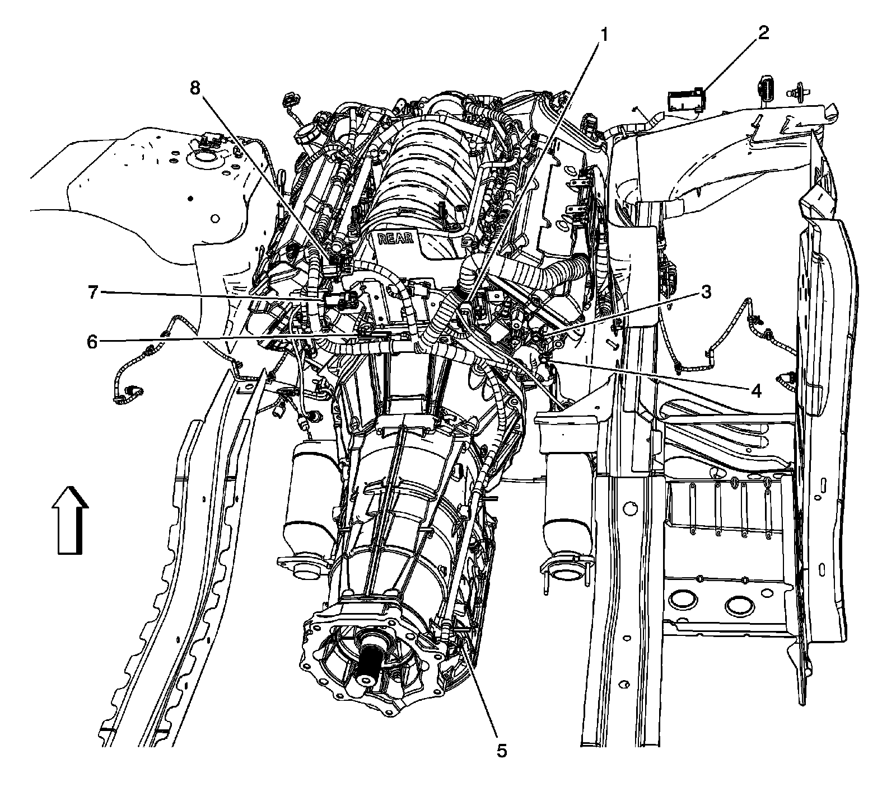
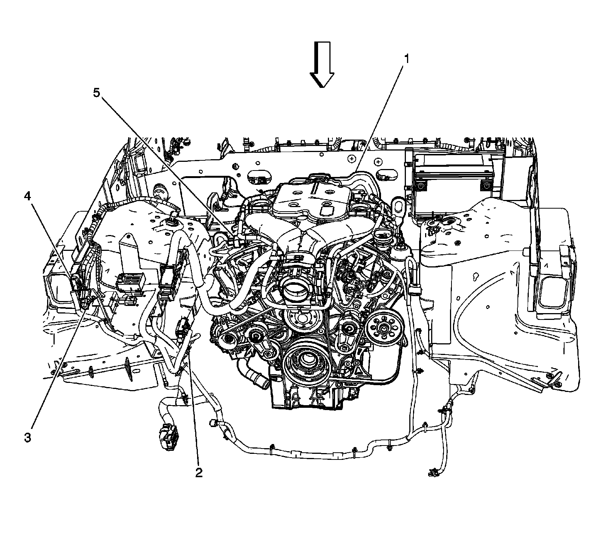
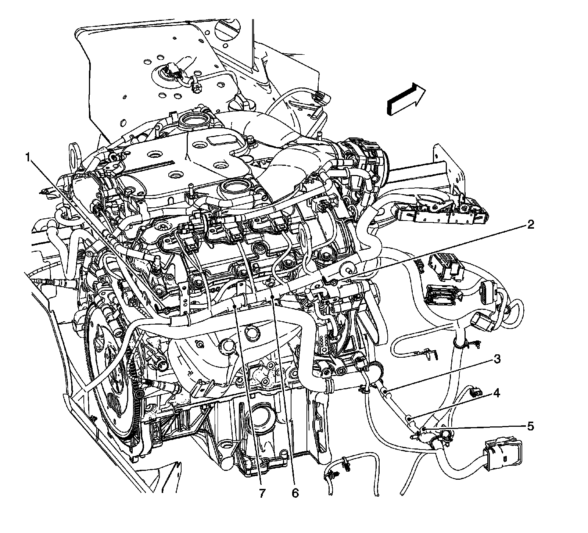
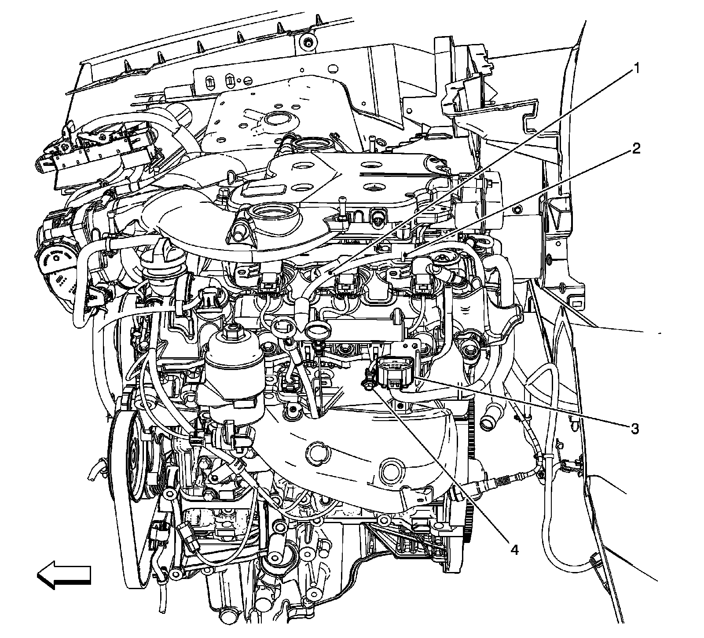
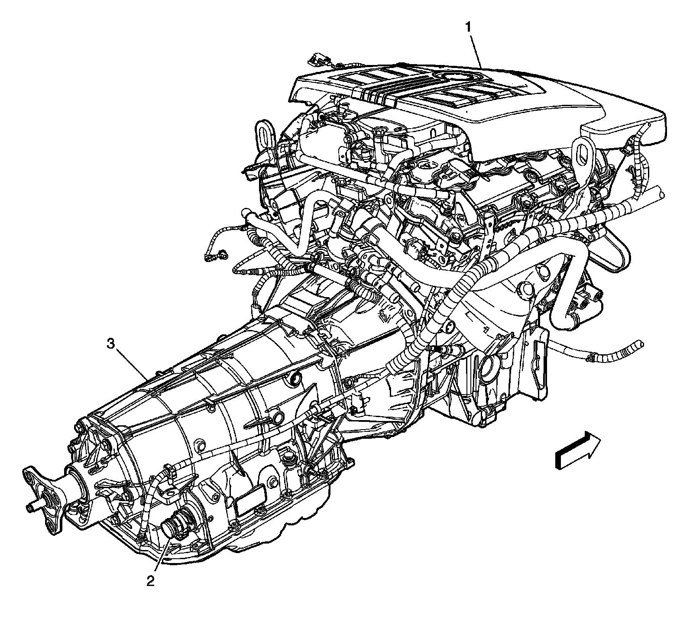
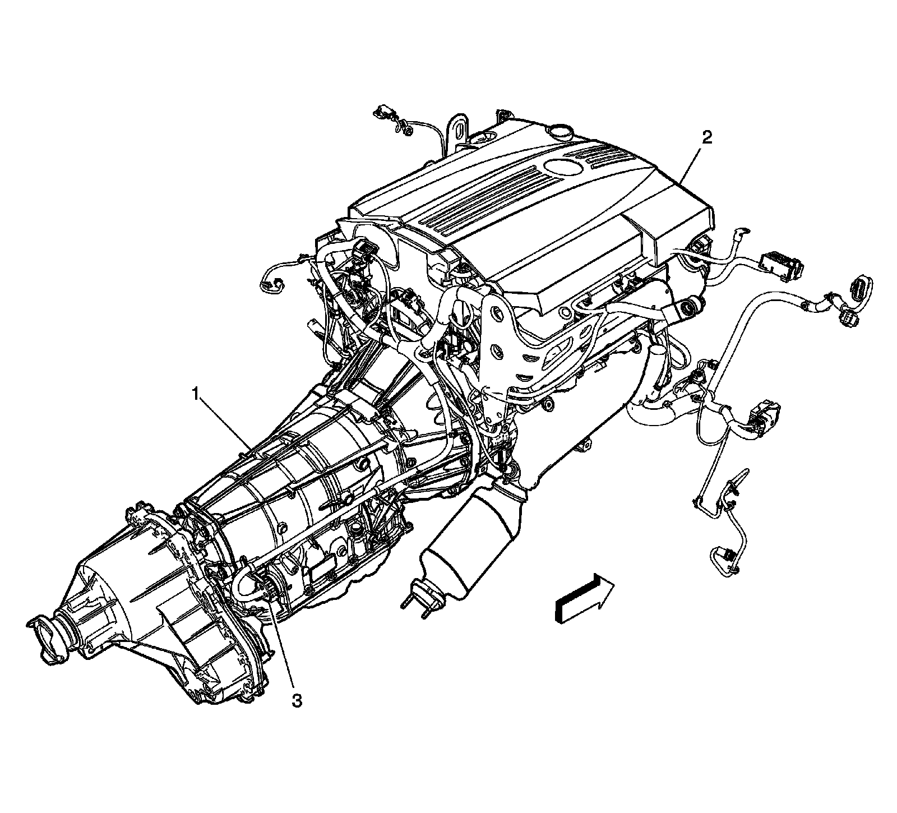
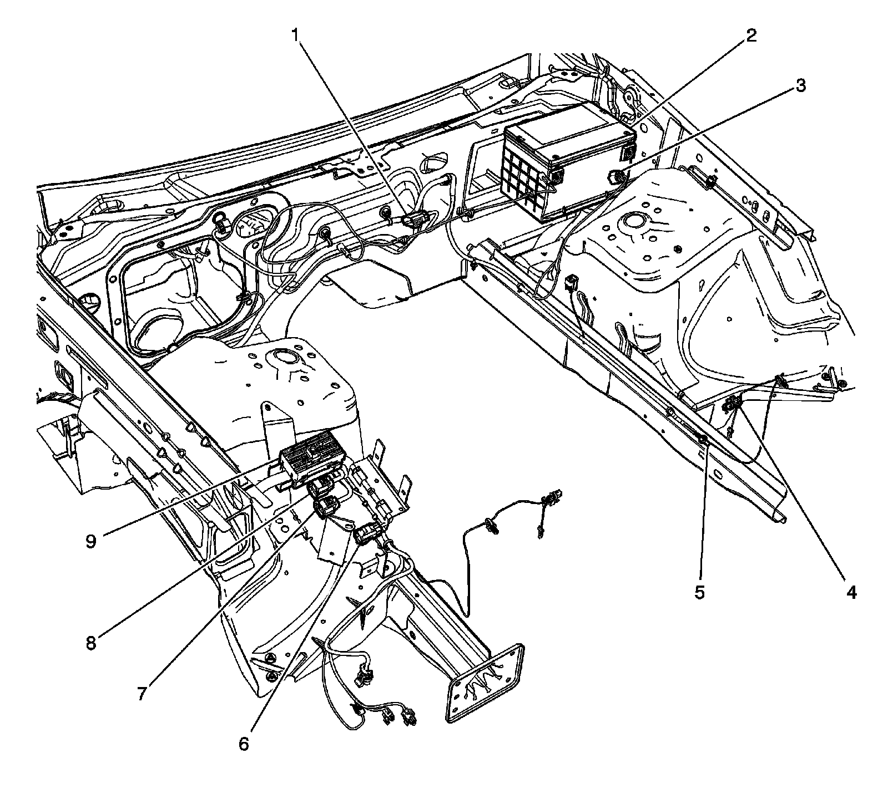

RHD
Harness Routing Views (RHD)
Rear of Engine Compartment (LH2 - Gas, 8 Cylinder, 4.6L, SFI, V8, DOHC, HO)

1 - X104
2 - Fuse Block - Underhood X3
3 - G100
4 - G107
5 - X175
6 - X107
7 - Heated Oxygen Sensor (HO2S) Bank 1 Sensor 1
8 - X102
X101 and X105 (LY7 - Gas, 6 Cylinder, 3.6L, SFI, V6)

1 - Engine-LY7
2 - G110
3 - X105 (F55)
4 - X101
5 - X108
Right Side of the Engine (LY7 - Gas, 6 Cylinder, 3.6L, SFI, V6)

1 - G109
2 - G106
3 - J101
4 - J100
5 - J118
6 - J111
7 - J112
Left Side of the Engine (LY7 - Gas, 6 Cylinder, 3.6L, SFI, V6)

1 - J102
2 - J112
3 - X102
4 - G111
Lower Rear of the Engine (LY7 - Gas, 6 Cylinder, 3.6L, SFI, V6)

1 - Engine-LY7
2 - X175
3 - Automatic Transmission-MYB
Lower Rear of the Engine (LH2 - Gas, 8 Cylinder, 4.6L, SFI, V8, DOHC, HO)

1 - Automatic Transmission-MX3
2 - Engine-LH2
3 - X175
I/P Harness Routing - Front Engine Compartment

1 - X102
2 - Battery
3 - Battery Current Sensor
4 - X103
5 - G101
6 - X116
7 - X118
8 - X117
9 - Fuse Block - Underhood X2